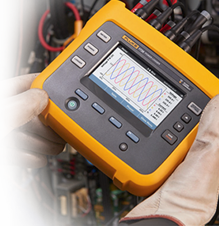
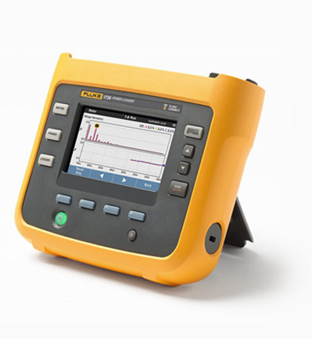
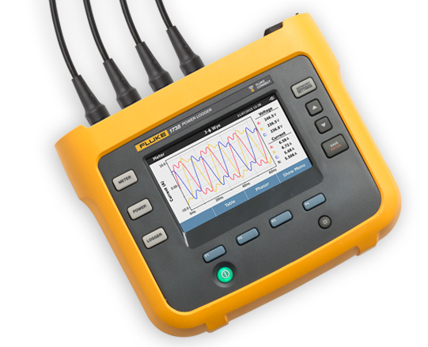

Fluke 1736 및 1738 3상 전력 로거
전력 품질 및 에너지 종합 연구
Fluke Energy Analyze Plus 소프트웨어와 Fluke 1736 및 1738 3상 전력 로거는 중요한 전력 품질 및 에너지 결정을 내리는 데 필요한 데이터를 실시간으로 제공합니다.
데모 요청 제품 사양 다운로드 비디오 보기

시스템 안정성 및 비용 최적화
데이터 가시성 확보
500개 이상의 전력 품질 매개변수를 자동으로 캡쳐하고 기록합니다.
불확도 감소
일반적인 연결 문제를 디지털 방식으로 보정하는 지능형 검증 기능을 이용하여 측정 라인으로 부터 직접 로거를 작동 시 측정 오류를 줄일 수 있습니다.
의사 결정 개선
측정 사항을 쉽고 빠르게 차트 및 그래프화 하여 문제를 식별하고 Fluke Energy Analyze Plus 소프트웨어로 자세한 보고서를 작성할 수 있습니다.
견적 요청

| 특징 | 1736 | 1738 |
| 부하 조사 | • | • |
| 에너지 평가 | • | • |
| 고조파 측정 | • | • |
| 전압 이벤트 측정 | • | • |
| 고급 분석:
파형 및 돌입 이벤트 측정 PQ 상태(EN51060) |
업그레이드 패키지* | • |
| IEEE519 총고조파 왜곡 측정 | 옵션 | 옵션 |
| Fluke Connect®와 완전한 통합 로깅 | 업그레이드 패키지* | • |
| Wi-Fi / Bluetooth | • | • |
| 자석 프로브 세트 | 옵션 | • |
| 자석 걸이 | 옵션 | • |
| WiFi 라우터를 통한 연결 | 제품 등록 시 사용할 수 있는 무료 소프트웨어 라이센스 필요 | |
| *기존 1736 Power Logger를 1738 Advanced Power Logger와 동일한 기능으로 업그레이드할 수 있는 업그레이드 패키지를 지금 사용할 수 있습니다. 업그레이드 패키지에 대한 자세한 내용은 유통업체에 문의하십시오. | ||
Fluke 1736 및 1738 알아보기
이 제품 둘러보기를 통해 Fluke 1736 및 1738의 디자인 및 레이아웃이 전력 품질 및 에너지 연구 준비 및 기록을 얼마나 더 쉽게 만들어 주는지를 확인할 수 있습니다.
비디오 보기Fluke 전력 로거 및 에너지 로거를 사용한 30일간의 부하 검사 가이드
새로운 부하를 기존 전기 서비스 또는 배전 세트에 추가할 때 가장 먼저 파악해야 할 사항은 기존 시스템이 새 부하를 지원하는지 여부입니다.
애플리케이션 노트 다운로드